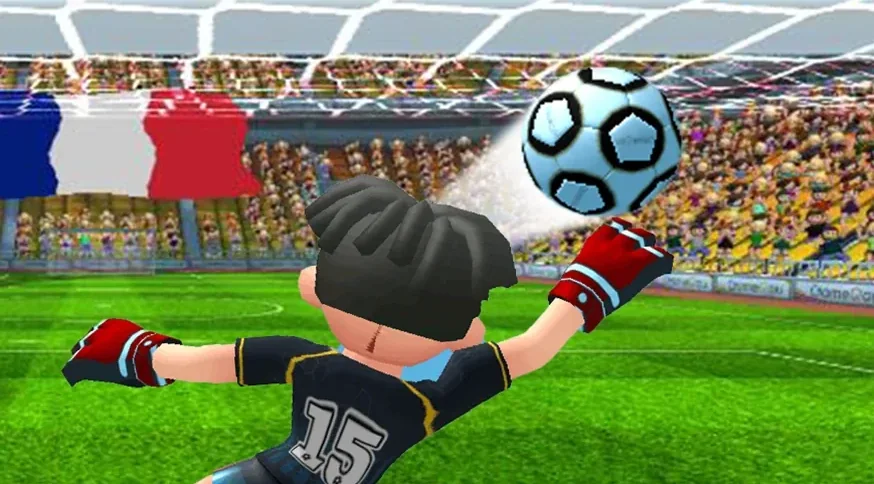

手机足球游戏
探索 Gamegou 的足球游戏组合：快节奏多人对决、益智足球、俱乐部经营，以及面向全球玩家的休闲足球体验。

Top Football Manager
完整的足球俱乐部经营模拟。考察球员、制定战术、观看 3D 实时比赛，并执教国家队。

Super Goal
画一条线就能踢球。下载量超过 5000 万。在海滩、屋顶、游轮等多种场景中畅玩。

Soccer Legend
足球与益智玩法的全新融合。从街头走向世界舞台，成为真正的传奇。

Soccer League
实时多人足球。与全球玩家组队，参加锦标赛，为你的俱乐部或国家而战。

Perfect Kick
只需轻轻一划，就能掌控每一场点球大战。Google Play 2015 年度最佳，全球下载量达数百万。

Perfect Kick 2
3 分钟内完成的快节奏 1 对 1 任意球对决。疯狂道具、联赛、俱乐部和搞怪服装等你来玩。
Soccer Strike
体验实时多人足球的刺激！组建球队，带领阵容走向荣耀，成为至高无上的冠军。
Gamegou 游戏：常见问题
新手最适合从哪款 Gamegou 游戏开始？
取决于你喜欢怎么玩。Super Goal 最容易上手，Top Football Manager 适合想经营俱乐部的策略玩家，Perfect Kick 2 适合快速的在线对决，Soccer Strike 适合实时团队比赛。
有哪些好玩的免费手机足球经理游戏？
Top Football Manager 是一款适用于 Android 和 iOS 的免费足球经理游戏，在 Google Play 上下载量超过 5000 万，并收录英超、西甲、德甲和美职联的官方授权球衣。
有哪些可以离线玩的足球游戏？
Super Goal 完全不需要 Wi-Fi 或移动数据，Soccer Legend 也有可以离线游玩的关卡。
有哪些可以和朋友在线一起玩的足球游戏？
在 Perfect Kick 2 中，你可以和朋友加入同一个俱乐部并发起友谊赛。在 Soccer Strike 和 Soccer League 中，你可以和其他玩家组队参加实时比赛和锦标赛。
有哪些适合碎片时间的快节奏足球游戏？
Perfect Kick 2 一场比赛不到三分钟，Super Goal 的益智关卡几秒钟就能开始，Perfect Kick 的点球大战只需一根手指。
哪些 Gamegou 游戏可以在 iPhone 上玩？
Top Football Manager、Super Goal、Perfect Kick、Perfect Kick 2 和 Soccer Strike 已在 App Store 上架，支持 iPhone 和 iPad。Soccer Legend 和 Soccer League 在 Google Play 上提供 Android 版本。
Gamegou 的游戏免费吗？
是的。七款游戏均可免费下载。游戏内含广告，除 Soccer League 外均提供可选的应用内购买。
Gamegou 是谁？
Gamegou Limited 是一家手机足球游戏开发商和发行商。旗下七款游戏，包括 Super Goal、Top Football Manager、Perfect Kick 和 Soccer Strike，累计下载量超过 3 亿。